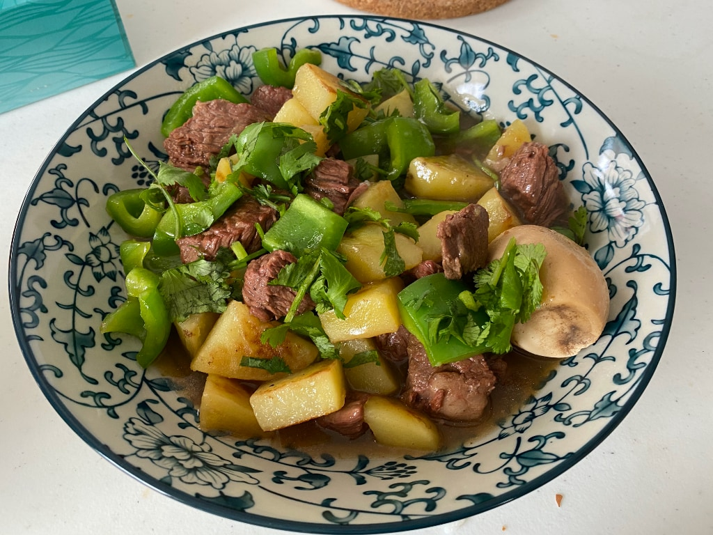
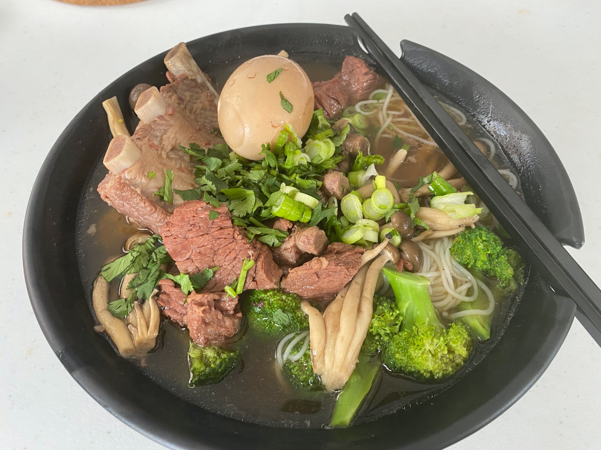
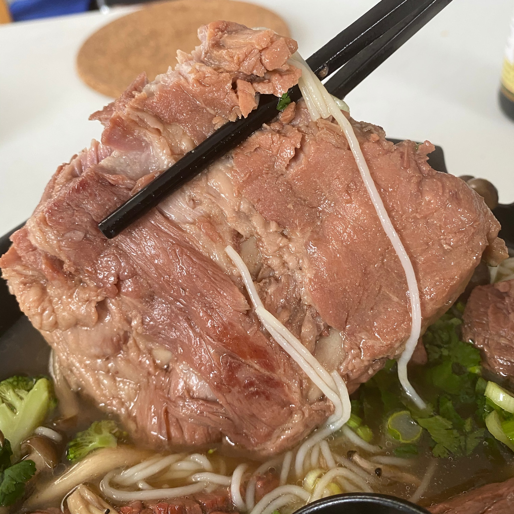

This recipe is a simple but delicious Chinese style stewed beef (not spicy). By saying simple, I mean literally simple, and you can make a big bowl of this dish, put in refrigerator and serve multiple times for your next week. If you are a college student, this would be your ideal dish.
Remove moistures on your beef with kitchen paper towels, and cut into cubes. I would recommend not cut into too small sizes, because beef shrinks a lot during cooking.
In Chinese style beef stewing, there is an important pre-process technique to remove stink tastes from meat. And here are two common methods:
First method, take a stew pot, pot some olive oil, and heat pot to very hot. Fry the beef cubes and gingers until you see some caramelized color on it.
Second method, use one more stew pot, boil some water (should be 1 time more volume than your beef). After the water boiled, put beef in. Wait to see second boil, take beef out, and wash the beef cubes to remove the flocculent blood condensations.
If you are using very fresh beef, I would recommend you choose the first method, because will minimize the beef taste lost.
Put beef in the stewing pot (if you are using the first method in previous step, keep using the same pot), add surger, pour boiling water (very important, must be boiling water). Then, turn heater to maximum to get things boil. Then, you will still see some flocculent blood condensations, remove them with a teaspoon. Make sure you clean most of the condensations in this step.
Add 200ml soy sauce. Soy sauce taste differently among different brands, and most importantly, they are in different salt level. You may adjust the usage in this step. Add a small portion at first, taste, and decide if you need more. In this step, you want the soup be a little bit salty, which is very important, because beef is always be little bit less salty than the soup.
Also add a bulb of garlic, don't peel because otherwise the garlic will be melted into soup at last. Add the beef stew spice pouch. Add optional materials, like boiled eggs, if you want.
Stew for 1.5 hours with the smallest heating level. Make sure your pot be boiling for the whole time, but in a very light way.
Finished, put in refrigerator when the soup goes cold.
When serving, you can serve this dish in many ways. The simplest one, take out some beef and soup, add some water (because the soup should be a little bit too salty) or unsalted beef broth (which you can buy in most grocery stores).
While, you can also do other tricks. Like the following:
This one is very simple: first, slow fry some potato cubes. Second, add refrigerated stew beef with original soup and some water. Third, wait to boil and add some peppers and boil for 5 minutes. Then, give some corn starch mixed with water to thicken the soup and concentrate all flavors. Finally, add some finely chopped cilantros and serve!

You can use similar idea in previous recipe and add different vegetables to serve multiple purpose, like serving with brocoli, mushroom and rice noodles. In this time, you don't need to add corn starch to thicken the soup.

Stew beef with pork ribs is also very good, but here are some thing to know:
这是一道简单的炖牛肉，口味不辣，做法主要源自台湾的卤牛肉（参考）。做法真的很简单，而且做一顿可以吃好几次，对于学生党和工作党和懒人来说真的非常合适。
用厨房纸擦干牛肉表面水分，并切成小块。不建议切太小，牛肉在煮的过程中会收缩很多。
预处理牛肉，可以焯水，也可以煎一下。如果牛肉新鲜的话，建议用煎的方法，这样可以最大程度保持肉的香味。煎的时候放入生姜。
如果上一步是煎的话，加入糖一起煎一下，会上色。如果焯水的话，可以单独加糖煎一下。之后倒入热水，一定要是热水。之后大火煮开，捞干净浮沫。
加入 200ml 酱油，各个牌子的酱油咸度不同，建议边尝边加。这里要加到汤稍微有一点过咸，这样可以让牛肉正好入味。
之后，加入蒜，香料包。
小火炖 1.5 小时，期间让锅保持轻微的沸腾状态。
结束，放凉后放入冰箱保存。
原汤和肉直接加热一下就很好吃，但是记得要加一些水，或者无盐味的牛肉高汤（建议选这种，超市一般都能买到），因为之前我们汤调的有一点 咸。
加入土豆，青椒，一起炖也非常好。先煎土豆，煎软之后放入牛肉和原汤，煮开，之后加入青椒煮五分钟。勾个芡，撒上香菜即可出锅。
稀释原汤也可以用来泡米粉/面吃，可以任意加入喜欢的蔬菜。
本方法炖其他的肉，比如猪肋排也很好吃，但是需要注意几点：